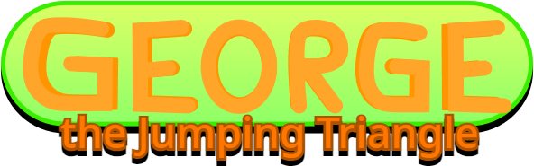

Released 05/07/23 • Updated 11/26/24
v1.1.1 // Platformer

Released 05/07/23 • Updated 11/26/24
v1.1.1 // Platformer
 Rocky Roughs, level 1 of the game.
Rocky Roughs, level 1 of the game. Cerulean City, level 3 of the game.
Cerulean City, level 3 of the game. The fourth cutscene of the game, before level 5.
The fourth cutscene of the game, before level 5.